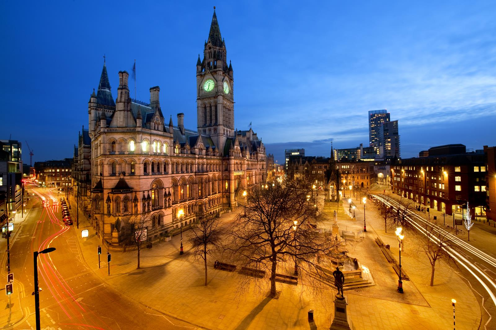
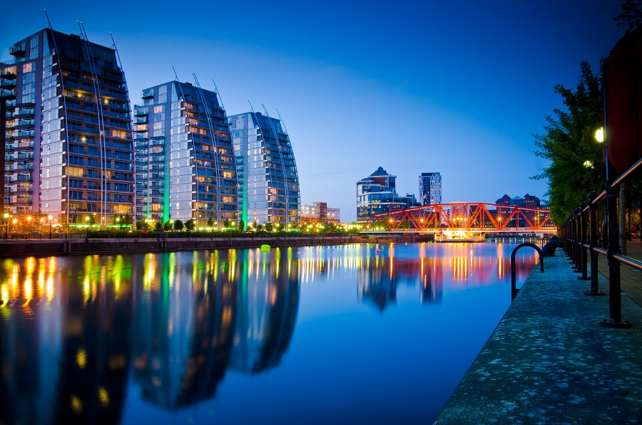
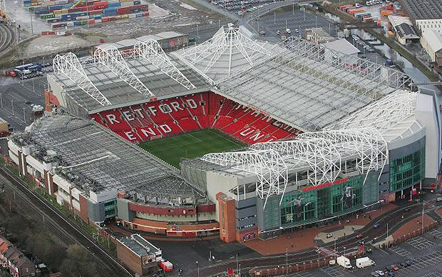
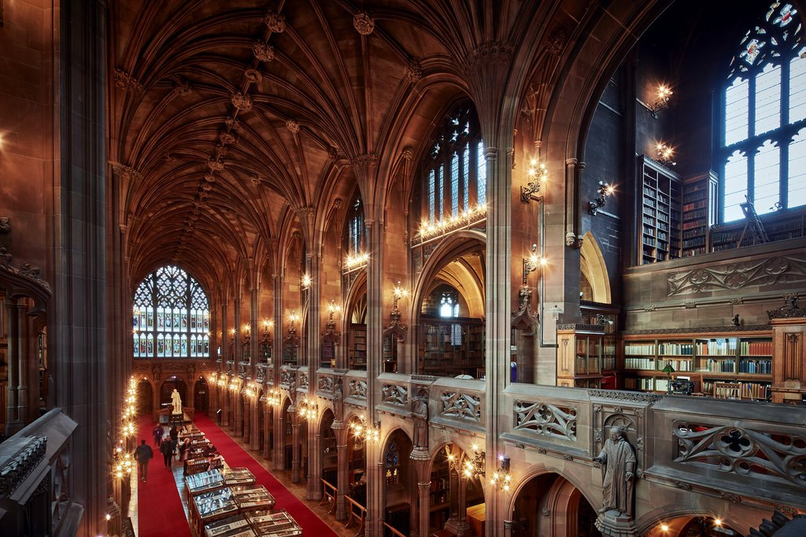
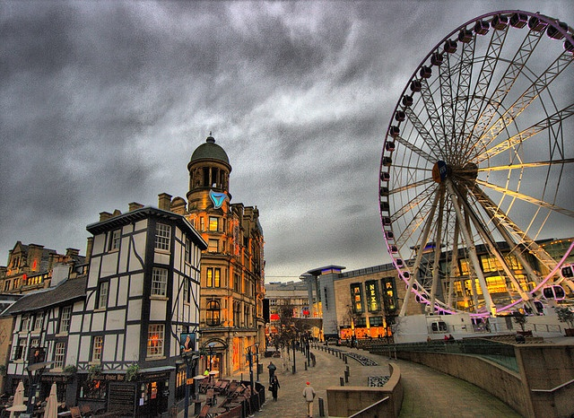

Fecha de publicación: 27/01/2015
Ubicación: Manchester-Inglaterra
Old Trafford, apodado el Teatro de los sueños por Bobby Charlton, ha sido el estadio de fútbol del Manchester United FC, perteneciente a la Premier League, desde 1910 a excepción de los años 40, como resultado del daño causado por una bomba en la Segunda Guerra Mundial, entonces el club compartió Maine Road con su rival local el Manchester City.
Old Trafford sufrió varias ampliaciones en los años 1990 y 2000, incluyendo la adición de capas adicionales que sirvieron para devolver el suelo casi a su capacidad original de 80.000. La expansión futura es probable que incluya la adición de un segundo nivel de la Grada Sur, lo que elevaría la capacidad a más de 90.000. El Récord de asistencia del estadio se registró en 1939, cuando 76.962 espectadores vieron la semi-final de la FA Cup entre el Wolverhampton Wanderers y Grimsby Town.
Fecha de publicación: 01/02/2015
Ubicación: Londres - Inglaterra
Plato famoso es el "Sunday Roast" (Tostado del Domingo). El Sunday Roast de los domingos es una tradición británica consiste en que el domingo se come carne asada. Pero ¿qué es exactamente un delicioso asado de los domingos? Un clásico asado de Domingo consiste en un gran trozo de carne hecho al horno acompañado de patatas, hortalizas, pudín de Yorkshire y una buena salsa (gravy) . La salsa (gravy) para el Sunday Roast se hace más espesa con la adición de harina.
El amor de los británicos por la carne de vacuno, especialmente para el almuerzo del domingo, no es nada nuevo, ya que es una parte de la identidad nacional tal, que incluso los franceses les llaman a los Britanicos "Rosbifs". The Sunday Roast ganó prominencia durante el reinado de Enrique VII en 1485 y el terrateniente del guardia - la guardia real - Estado desde el siglo XV, conocido como “Beefeaters” debido a su afición por comer carne asada. William Kitchener, un óptico Inglés, inventó el telescopio, músico aficionado y cocinero excepcional, en 1871 aconsejó a comer todas las semanas 3 kilogramos como parte de una dieta saludable. También recomendó comer 2 kilos de pan y beber una pinta de cerveza todos los días. Hoy, sin embargo, se consumen aproximadamente 1,5 kg de carne por semana en el Reino Unido. Un gran contraste con la cantidad que se come de carne hoy en dia.
Fecha de nacimiento: 5 de septiembre de 1946
Lugar de nacimiento: Stone Town, Tanzania
Freddie Mercury (nacido como Farrokh Bulsara,34 en guyaratí, Stone Town, Zanzíbar; 5 de septiembre de 1946 - Kensington, Londres, Reino Unido; 24 de noviembre de 1991) fue un cantante, compositor, pianista, y músico británico de origen parsi e indio,5 conocido por haber sido el líder y vocalista de la banda de rock Queen.
Como intérprete, ha sido reconocido por su poderosa voz y extravagantes puestas en escena.678 Como compositor, escribió muchos de los éxitos de Queen, tales como Bohemian Rhapsody, Killer Queen, Somebody to Love, Don't Stop Me Now, Crazy Little Thing Called Love, Innuendo o We Are the Champions. Además de la actividad con la banda, en los años ochenta lanzó su carrera como solista, que lo llevó a publicar dos álbumes, Mr. Bad Guy (1985) y Barcelona (1988), este último en colaboración con la soprano española Montserrat Caballé. El sencillo homónimo, una colaboración entre ambos, fue la canción oficial de los Juegos Olímpicos de Barcelona 1992.